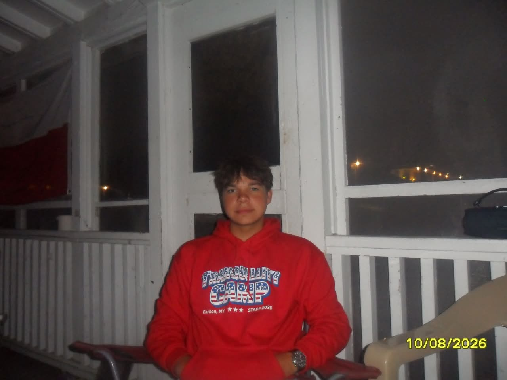

Sátori Péter
Bemutatkozás
Sátori Péter vagyok, 20 éves. A Budapesti Műszaki Szakképzési Centrum Neumann János Informatikaai techikumban tanulok, ahol jelenleg informatikai rendszer és alkalmazásüzemeletető technikusnak tanulok. Szabadidőben szeretek biciklizni és időt tölteni a barátaimmal. Jelenleg a MÁV-CSOPORTnál dolgozok diákmunkásként. Továbbtanulni a Nemzeti Közszolgálaati Egyetemen szeretnék tanulni. Szakterületem a DHCP, Vlan és HSRP.